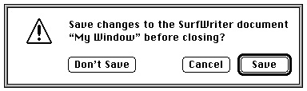

Legacy Document
Important: The information in this document is obsolete and should not be used for new development.
Important: The information in this document is obsolete and should not be used for new development.


Creating Alert Sounds and Alert Boxes
To create an alert, use one of these functions:NoteAlert,CautionAlert,StopAlert, andAlert. Icons associated with the first three functions appear in the upper-left corner of the alert boxes, as previously shown in Figure 6-3, Figure 6-4, and Figure 6-5. TheAlertfunction allows you to display your own icon or to have no icon at all in the upper-left corner of the alert box.These functions take descriptive information about the alert from an alert resource that you provide. An alert resource has the resource type
'ALRT'. When you call one of these functions, you pass it the resource ID of the alert resource and a pointer to an event filter function. These functions create and display an alert box. When the user clicks a button in an alert box, these functions return the button's item number and close the alert box, at which time you respond appropriately to the user's click, as described in "Responding to Events in Alert Boxes" beginning on page 6-81.Here's an example of how to create the caution alert shown in Figure 6-10.
VAR myAlertItem: Integer; myAlertItem := CautionAlert(kSaveAlertID, @MyEventFilter);Figure 6-10 An alert box to save changes to a document
You should specify a pointer to an event filter function when you call the
Alert,StopAlert,CautionAlert, andNoteAlertfunctions. You should provide an event filter function as a secondary event-handling loop for events thatModalDialogdoesn't handle. In this example, a pointer toMyEventFilteris specified for the event filter function. You can use the standard event filter function by passingNILin this parameter. The standard event filter function allows users to press the Return or Enter key in lieu of clicking the default button. As described in "Writing an Event Filter Function for Alert and Modal Dialog Boxes" beginning on page 6-86, your application should provide a simple event filter function that also allows background applications to receive update events. You can use the same event filter function in most or all of your alert boxes and modal dialog boxes.Continuing with the previous example, an application-defined constant (
kSaveAlertID) specifies the resource ID of an alert resource in a parameter to
theCautionAlertfunction. Listing 6-1 shows how this alert resource appears
in Rez input format. (Rez is the resource compiler provided with Apple's Macintosh Programmer's Workshop [MPW], available from APDA.)Listing 6-1 Rez input for an alert resource
resource 'ALRT' (kSaveAlertID, purgeable) { /*alert resource*/ {94, 80, 183, 438}, /*rectangle for alert box*/ kSaveAlertDITL, /*use the 'DITL' with res ID 200*/ { /*alert stages, starting with #4; at each */ /* stage, make OK the default, display the */ /* alert box, & play the system alert sound*/ OK, visible, sound1, /*4th consecutive error*/ OK, visible, sound1, /*3rd consecutive error*/ OK, visible, sound1, /*2nd consecutive error*/ OK, visible, sound1, /*1st error*/ }, alertPositionParentWindow /*place over document window*/ };An alert resource contains the following information:
In Listing 6-1, the coordinates (94,80,183,438) specify the dimensions of the alert box, and the
- a rectangle, given in global coordinates, that determines the alert box's dimensions and, optionally, its position; these coordinates specify the upper-left and lower-right corners of the alert box
- the resource ID of the item list for the alert box
- the actions to be taken at each of four alert stages
- as an option, a constant (either
alertPositionParentWindow,alertPositionMainScreen, oralertPositionParentWindowScreen)
that tells the Dialog Manager where to position the alert box (available only to applications running in System 7)
alertPositionParentWindowconstant causes the Dialog Manager to place the alert box just below the title bar of the user's document window. If you don't supply a positioning constant, the Dialog Manager places the alert box at the global coordinates you specify for the alert box's rectangle. The positioning constants for alert boxes are explained in "Positioning Alert and Dialog Boxes" beginning on page 6-62.In Listing 6-1, the application-defined constant
kSaveAlertDITLrepresents the resource ID for the item list resource. "Providing Items for Alert and Dialog Boxes" beginning on page 6-24 describes how to create an item list resource.Your application can base its response on the number of consecutive times an alert condition recurs. In Listing 6-1, the alert resource specifies that each consecutive time
the user repeats the action that invokes this caution alert, the Dialog Manager should perform the following: outline the OK button and treat it as the default button, display the alert box (that is, make it "visible"), and play a single system alert sound.Your application can define different responses for each of four stages of an alert. This is most appropriate for stop alerts--those that signify that an action cannot be completed--especially when that action has a high probability of being accidental (for example, when the user chooses the Cut command when no text is selected). Under such a circumstance, your application might simply play the system alert sound the first two times the user makes the mistake, and for subsequent mistakes it might also present an alert box. Every consecutive occurrence of the mistake after the fourth alert stage is treated as a fourth-stage alert.
For example, a user might try to paste a graphic outside the page margins of a simple page-layout program; the first time the user tries this, the application--using the Dialog Manager--may simply play the system alert sound for the user. If the user repeats the mistake, the application may play the system alert sound again. But when the user repeats the error for the third consecutive time, the application may display an alert box like the one shown in Figure 6-11. If the user makes the same mistake immediately after dismissing this alert box, the alert box reappears, and it continues doing so until the user corrects or abandons the improper action.
Figure 6-11 An alert box displayed only during the third and fourth alert stages
Listing 6-2 shows the alert resource used to specify the stop alert displayed in
Figure 6-11. Notice that the fourth alert stage is listed first, and the first alert stage is listed last. At the third alert stage, the application displays an alert box but does not
play the system alert sound. If the user repeats the mistake a fourth consecutive time,
the application plays the system alert sound and displays the alert box as well.Listing 6-2 Specifying different alert responses according to alert stage
resource 'ALRT' (kStopAlertID, purgeable) { /*alert resource*/ {40, 40, 127, 353}, /*rectangle for alert box*/ kStopAlertDITL, /*use the 'DITL' with res ID 300*/ { /*alert stages, starting with #4*/ OK, visible, sound1, /*4th err: show alert box, play alert sound*/ OK, visible, silent, /*3rd err: show alert box, don't play sound*/ OK, invisible, sound1, /*2nd err: play sound, don't show alert box*/ OK, invisible, sound1, /*1st err: play sound, don't show alert box*/ }, alertPositionParentWindow /*place over document window*/ };The actions for each alert stage are specified by the following three pieces of information:
By default, the Dialog Manager uses the system alert sound. The
- Which button is the default button--the OK button (that is, the first item in the item list resource) or the Cancel button (that is, the second item in the item list resource). The Dialog Manager automatically draws a bold outline around the default button, and when the user presses the Return or Enter key, the Dialog Manager treats--or your event filter function should treat--that keyboard event as a click in the default button. The OK and Cancel buttons are described in detail in "Providing Items for Alert and Dialog Boxes" beginning on page 6-24. At each alert stage, you can change the default button, although it's difficult to imagine a scenario where changing the default button would be helpful to the user. In the previous example, the OK button is the default.
- Whether the alert box is to be displayed. If you specify the
visibleconstant for
an alert stage, the alert box is displayed; if you specify theinvisibleconstant, it is not. In Listing 6-2, the alert box is not displayed the first two consecutive times the user repeats the mistake, but it is displayed for all subsequent consecutive times.- Which of four possible sounds (if any) should be emitted at this stage of the alert. In the previous example, the first, second, and fourth alert stages play a single system alert sound, but the third stage plays no sound.
sound1constant, used in Listing 6-2, tells the Dialog Manager to play the system alert sound once; you can also specify thesound2andsound3constants, which cause the Dialog Manager to play the system alert sound two and three times, respectively, each time at the same pitch and with the same duration. The volume of the sound depends on the current speaker volume setting, which the user can adjust in the Sound control panel. If the user has set the speaker volume to 0, the menu bar blinks once in place of each sound that the user would otherwise hear.If you want the Dialog Manager to play sounds other than the system alert sound, write your own sound procedure and then call
ErrorSoundand pass it a pointer to your sound procedure. TheErrorSoundprocedure (described on page 6-104) makes your sound procedure the current sound procedure. For example, you might create a sound procedure namedMyAlertSound, as shown in Listing 6-3.Listing 6-3 Creating your own sound procedure for alerts
PROCEDURE MyAlertSound (soundNo: Integer); BEGIN CASE soundNo OF 0: PlayMyWhisperAlert; {sound for silent constant in alert resources} 1: PlayMyBellAlert; {sound for sound1 constant in alert resources} 2: PlayMyDrumAlert; {sound for sound2 constant in alert resources} 3: PlayMyTrumpetAlert; {sound for sound3 constant in alert resources} OTHERWISE ; END; {of CASE} END;For each of the four alert stages that can be reported in thesoundNoparameter, your procedure can emit any sound that you define.As previously explained, the dimensions of the rectangle you specify in the alert resource determine the dimensions of the alert box. You can also let the rectangle coordinates serve as global coordinates that position the alert box, or you can let the Dialog Manager automatically locate it for you according to three standard positions. Listing 6-2 on page 6-20, for example, uses the
alertPositionParentWindowconstant to position the alert box over the document window where the user is working. For details about these standard positions, see "Positioning Alert and Dialog Boxes" beginning on page 6-62.